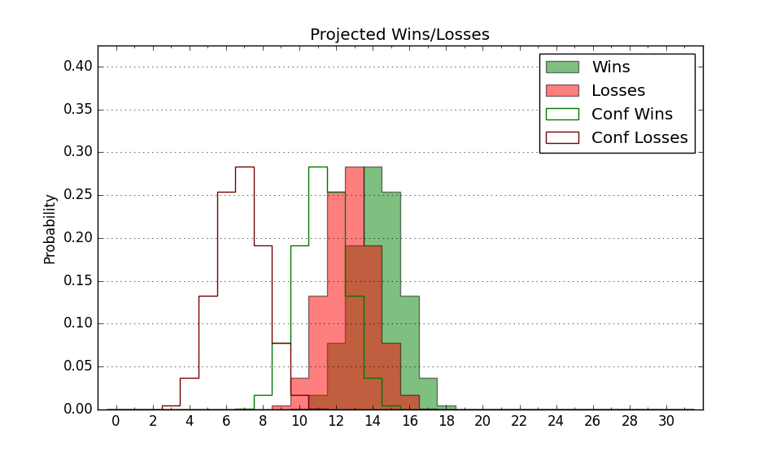

| Home | Game Probabilities | Conferences | Preseason Predictions | Odds Charts | NCAA Tournament |
| City: | Morehead, Kentucky | |
| Conference: | Ohio Valley (1st)
| |
| Record: | 7-3 (Conf) 10-9 (Overall) | |
| Ratings: | Comp.: -9.9 (284th) Net: -10.5 (287th) Off: 97.8 (263rd) Def: 108.2 (283rd) SoR: 0.0 (164th) |
| Remaining | ||||||
|---|---|---|---|---|---|---|
| Date | Opponent | Win Prob | Pred. | |||
| 2/2 | Tennessee Tech (272) | 63.2% | W 69-66 | |||
| 2/4 | @ Southern Indiana (229) | 25.7% | L 69-76 | |||
| 2/9 | @ Little Rock (328) | 47.5% | L 72-73 | |||
| 2/11 | @ Southeast Missouri St. (246) | 29.0% | L 68-75 | |||
| 2/16 | Tennessee St. (309) | 72.3% | W 75-68 | |||
| 2/18 | Lindenwood (333) | 77.8% | W 70-62 | |||
| 2/23 | @ Eastern Illinois (337) | 51.6% | W 67-66 | |||
| 2/25 | Tennessee Martin (236) | 55.7% | W 72-70 | |||
| Previous | Game Score | |||||
| Date | Opponent | Win Prob | Result | Off | Def | Net |
| 11/7 | @Indiana (20) | 2.5% | L 53-88 | -10.6 | 2.8 | -7.7 |
| 11/12 | Bellarmine (262) | 61.6% | W 62-55 | -11.8 | 16.6 | 4.8 |
| 11/15 | @West Virginia (22) | 2.7% | L 57-75 | -6.4 | 16.4 | 10.0 |
| 11/18 | @Vanderbilt (88) | 7.4% | L 43-76 | -33.4 | 6.9 | -26.6 |
| 11/26 | @Marshall (84) | 7.2% | L 59-83 | -7.5 | -1.0 | -8.5 |
| 12/3 | North Alabama (294) | 66.8% | L 75-81 | -8.2 | -7.8 | -16.0 |
| 12/11 | East Tennessee St. (252) | 59.3% | W 61-57 | 6.9 | 3.0 | 9.8 |
| 12/14 | @Georgia Southern (227) | 25.4% | W 74-71 | 20.4 | -0.8 | 19.5 |
| 12/17 | @Mercer (219) | 24.3% | L 52-79 | -11.1 | -23.7 | -34.8 |
| 12/29 | @Tennessee St. (309) | 43.4% | W 83-75 | 18.6 | -1.8 | 16.8 |
| 12/31 | @Tennessee Martin (236) | 26.9% | L 57-64 | -13.4 | 13.5 | 0.2 |
| 1/5 | Southern Indiana (229) | 54.1% | W 84-80 | 11.2 | -5.8 | 5.4 |
| 1/7 | Eastern Illinois (337) | 78.4% | W 69-59 | 8.1 | 2.8 | 10.8 |
| 1/12 | @Tennessee Tech (272) | 33.6% | L 62-79 | -7.5 | -20.4 | -27.9 |
| 1/14 | Southeast Missouri St. (246) | 58.2% | L 86-91 | 17.6 | -23.1 | -5.5 |
| 1/19 | @SIU Edwardsville (196) | 19.6% | W 67-58 | 19.8 | 10.2 | 30.0 |
| 1/21 | @Lindenwood (333) | 50.7% | W 72-63 | 23.7 | -6.0 | 17.7 |
| 1/26 | Little Rock (328) | 75.5% | W 76-72 | 2.4 | -3.8 | -1.5 |
| 1/28 | SIU Edwardsville (196) | 45.4% | W 55-50 | -14.5 | 21.0 | 6.5 |
| Stats & Trends | |||||
|---|---|---|---|---|---|
| Current | Day | Week | Month | Season | |
| Composite | -9.9 | -0.0 | +0.1 | +0.1 | -8.7 |
| Comp Rank | 284 | -- | +4 | +1 | -113 |
| Net Efficiency | -10.5 | -0.0 | +0.4 | +2.8 | -- |
| Net Rank | 287 | -- | +7 | +22 | -- |
| Off Efficiency | 97.8 | -0.0 | -0.8 | +3.9 | -- |
| Off Rank | 263 | -- | -25 | +36 | -- |
| Def Efficiency | 108.2 | -0.0 | +1.2 | -1.1 | -- |
| Def Rank | 283 | +2 | +26 | -4 | -- |
| SoS Rank | 271 | +2 | -33 | -176 | -- |
| Exp. Wins | 14.2 | +0.0 | +0.8 | +1.6 | -2.1 |
| Exp. Conf Wins | 11.2 | +0.0 | +0.8 | +1.6 | -1.4 |
| Conf Champ Prob | 28.5 | +0.1 | +14.8 | +21.4 | -18.1 |

| Advanced Stats | ||
|---|---|---|
| Stat | Value | Rank |
| Off Eff FG % | 0.479 | 279 |
| Off Ast Ratio | 0.138 | 214 |
| Off ORB% | 0.239 | 268 |
| Off TO Rate | 0.173 | 290 |
| Off FT Ratio | 0.357 | 70 |
| Def Eff FG % | 0.524 | 249 |
| Def Ast Ratio | 0.140 | 159 |
| Def ORB% | 0.264 | 167 |
| Def TO Rate | 0.138 | 302 |
| Def FT Ratio | 0.282 | 114 |